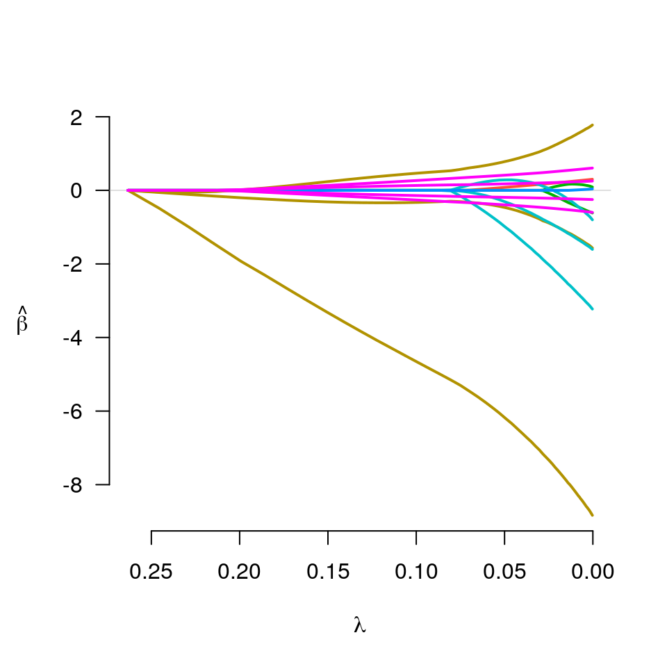
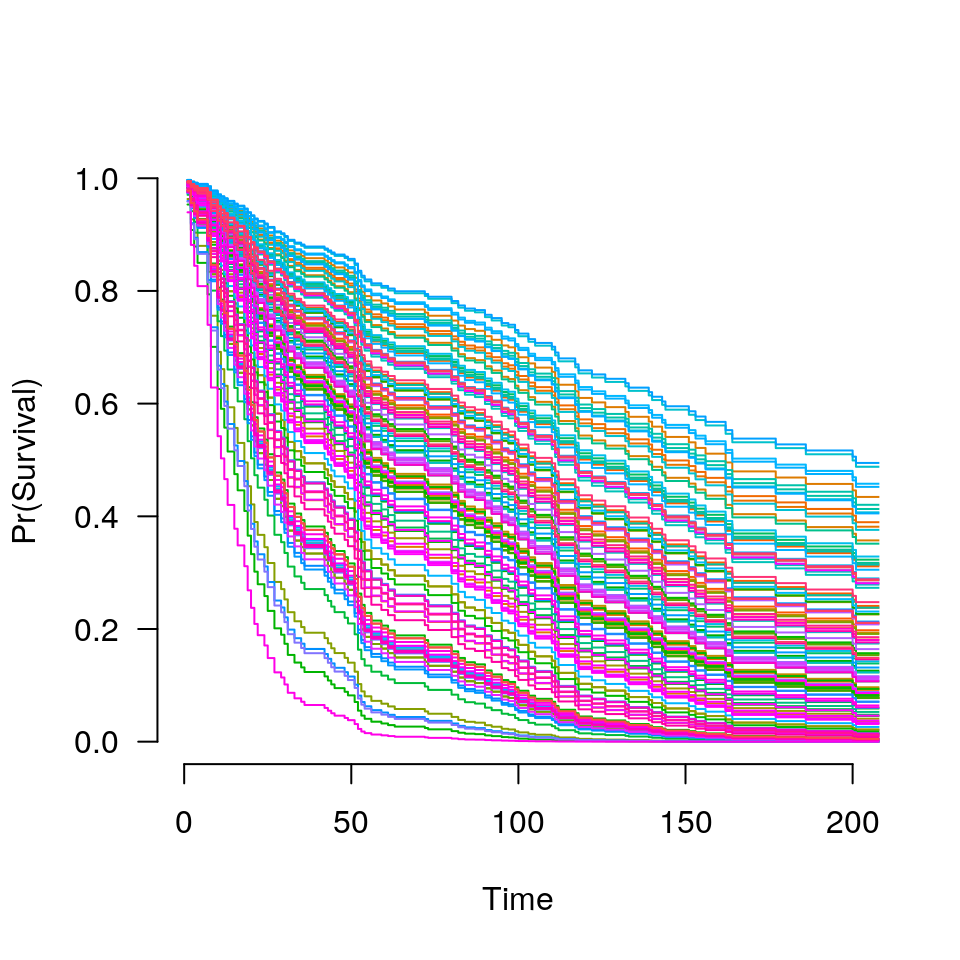

grpsurv.RdFit regularization paths for Cox models with grouped penalties over a grid of values for the regularization parameter lambda.
grpsurv(X, y, group=1:ncol(X), penalty=c("grLasso", "grMCP", "grSCAD", "gel", "cMCP"), gamma=ifelse(penalty=="grSCAD", 4, 3), alpha=1, nlambda=100, lambda, lambda.min={if (nrow(X) > ncol(X)) 0.001 else .05}, eps=.001, max.iter=10000, dfmax=p, gmax=length(unique(group)), tau=1/3, group.multiplier, warn=TRUE, returnX=FALSE, ...)
| X | The design matrix. |
|---|---|
| y | The time-to-event outcome, as a two-column matrix or
|
| group | A vector describing the grouping of the coefficients.
For greatest efficiency and least ambiguity (see details), it is
best if |
| penalty | The penalty to be applied to the model. For group
selection, one of |
| gamma | Tuning parameter of the group or composite MCP/SCAD penalty (see details). Default is 3 for MCP and 4 for SCAD. |
| alpha |
|
| nlambda | The number of lambda values. Default is 100. |
| lambda.min | The smallest value for lambda, as a fraction of lambda.max. Default is .001 if the number of observations is larger than the number of covariates and .05 otherwise. |
| lambda | A user-specified sequence of lambda values. By default,
a sequence of values of length |
| eps | Convergence threshhold. The algorithm iterates until the
RMSD for the change in linear predictors for each coefficient is
less than |
| max.iter | Maximum number of iterations (total across entire path). Default is 10000. |
| dfmax | Limit on the number of parameters allowed to be nonzero. If this limit is exceeded, the algorithm will exit early from the regularization path. |
| gmax | Limit on the number of groups allowed to have nonzero elements. If this limit is exceeded, the algorithm will exit early from the regularization path. |
| tau | Tuning parameter for the group exponential lasso; defaults to 1/3. |
| group.multiplier | A vector of values representing multiplicative factors by which each group's penalty is to be multiplied. Often, this is a function (such as the square root) of the number of predictors in each group. The default is to use the square root of group size for the group selection methods, and a vector of 1's (i.e., no adjustment for group size) for bi-level selection. |
| warn | Return warning messages for failures to converge and model saturation? Default is TRUE. |
| returnX | Return the standardized design matrix? Default is FALSE. |
| ... | Not used. |
The sequence of models indexed by the regularization parameter
lambda is fit using a coordinate descent algorithm. In order
to accomplish this, the second derivative (Hessian) of the Cox partial
log-likelihood is diagonalized (see references for details). The
objective function is defined to be
$$Q(\beta|X, y) = \frac{1}{n} L(\beta|X, y) +
P_\lambda(\beta)$$
where the loss function L is the deviance (-2 times the partial
log-likelihood) from the Cox regression mode.
See
here for more details.
Presently, ties are not handled by grpsurv in a particularly
sophisticated manner. This will be improved upon in a future release
of grpreg.
An object with S3 class "grpsurv" containing:
The fitted matrix of coefficients. The number of rows is
equal to the number of coefficients, and the number of columns is
equal to nlambda.
Same as above.
The sequence of lambda values in the path.
Same as above.
Same as above.
Same as above.
The negative partial log-likelihood of the fitted model at
each value of lambda.
The number of observations.
A vector of length nlambda containing estimates of
effective number of model parameters all the points along the
regularization path. For details on how this is calculated, see
Breheny and Huang (2009).
A vector of length nlambda containing the number
of iterations until convergence at each value of lambda.
A named vector containing the multiplicative constant applied to each group's penalty.
Matrix of exp(beta) values for each subject over all
lambda values.
Times on study.
Failure event indicator.
Breheny, P. and Huang, J. (2009) Penalized methods for bi-level variable selection. Statistics and its interface, 2: 369-380. http://myweb.uiowa.edu/pbreheny/pdf/Breheny2009.pdf
Huang J., Breheny, P. and Ma, S. (2012). A selective review of group selection in high dimensional models. Statistical Science, 27: 481-499. http://myweb.uiowa.edu/pbreheny/pdf/Huang2012.pdf
Breheny, P. and Huang, J. (2015) Group descent algorithms for nonconvex penalized linear and logistic regression models with grouped predictors. Statistics and Computing, 25: 173-187. http://dx.doi.org/10.1007/s11222-013-9424-2
Breheny, P. (2015) The group exponential lasso for bi-level variable selection. Biometrics, 71: 731-740. http://dx.doi.org/10.1111/biom.12300
Simon N, Friedman JH, Hastie T, and Tibshirani R. (2011) Regularization Paths for Cox's Proportional Hazards Model via Coordinate Descent. Journal of Statistical Software, 39: 1-13. http://www.jstatsoft.org/v39/i05
#> Warning: collapsing to unique 'x' values#> Warning: collapsing to unique 'x' values#> Warning: collapsing to unique 'x' values#> Warning: collapsing to unique 'x' values#> Warning: collapsing to unique 'x' values#> Warning: collapsing to unique 'x' values#> Warning: collapsing to unique 'x' values#> Warning: collapsing to unique 'x' values#> Warning: collapsing to unique 'x' values#> Warning: collapsing to unique 'x' values#> Warning: collapsing to unique 'x' values#> Warning: collapsing to unique 'x' values#> Warning: collapsing to unique 'x' values#> Warning: collapsing to unique 'x' values#> Warning: collapsing to unique 'x' values#> Warning: collapsing to unique 'x' values#> Warning: collapsing to unique 'x' values#> Warning: collapsing to unique 'x' values#> Warning: collapsing to unique 'x' values#> Warning: collapsing to unique 'x' values#> Warning: collapsing to unique 'x' values#> Warning: collapsing to unique 'x' values#> Warning: collapsing to unique 'x' values#> Warning: collapsing to unique 'x' values#> Warning: collapsing to unique 'x' values#> Warning: collapsing to unique 'x' values#> Warning: collapsing to unique 'x' values#> Warning: collapsing to unique 'x' values#> Warning: collapsing to unique 'x' values#> Warning: collapsing to unique 'x' values#> Warning: collapsing to unique 'x' values#> Warning: collapsing to unique 'x' values#> Warning: collapsing to unique 'x' values#> Warning: collapsing to unique 'x' values#> Warning: collapsing to unique 'x' values#> Warning: collapsing to unique 'x' values#> Warning: collapsing to unique 'x' values#> Warning: collapsing to unique 'x' values#> Warning: collapsing to unique 'x' values#> Warning: collapsing to unique 'x' values#> Warning: collapsing to unique 'x' values#> Warning: collapsing to unique 'x' values#> Warning: collapsing to unique 'x' values#> Warning: collapsing to unique 'x' values#> Warning: collapsing to unique 'x' values#> Warning: collapsing to unique 'x' values#> Warning: collapsing to unique 'x' values#> Warning: collapsing to unique 'x' values#> Warning: collapsing to unique 'x' values#> Warning: collapsing to unique 'x' values#> Warning: collapsing to unique 'x' values#> Warning: collapsing to unique 'x' values#> Warning: collapsing to unique 'x' values#> Warning: collapsing to unique 'x' values#> Warning: collapsing to unique 'x' values#> Warning: collapsing to unique 'x' values#> Warning: collapsing to unique 'x' values#> Warning: collapsing to unique 'x' values#> Warning: collapsing to unique 'x' values#> Warning: collapsing to unique 'x' values#> Warning: collapsing to unique 'x' values#> Warning: collapsing to unique 'x' values#> Warning: collapsing to unique 'x' values#> Warning: collapsing to unique 'x' values#> Warning: collapsing to unique 'x' values#> Warning: collapsing to unique 'x' values#> Warning: collapsing to unique 'x' values#> Warning: collapsing to unique 'x' values#> Warning: collapsing to unique 'x' values#> Warning: collapsing to unique 'x' values#> Warning: collapsing to unique 'x' values#> Warning: collapsing to unique 'x' values#> Warning: collapsing to unique 'x' values#> Warning: collapsing to unique 'x' values#> Warning: collapsing to unique 'x' values#> Warning: collapsing to unique 'x' values#> Warning: collapsing to unique 'x' values#> Warning: collapsing to unique 'x' values#> Warning: collapsing to unique 'x' values#> Warning: collapsing to unique 'x' values#> Warning: collapsing to unique 'x' values#> Warning: collapsing to unique 'x' values#> Warning: collapsing to unique 'x' values#> Warning: collapsing to unique 'x' values#> Warning: collapsing to unique 'x' values#> Warning: collapsing to unique 'x' values#> Warning: collapsing to unique 'x' values#> Warning: collapsing to unique 'x' values#> Warning: collapsing to unique 'x' values#> Warning: collapsing to unique 'x' values#> Warning: collapsing to unique 'x' values#> Warning: collapsing to unique 'x' values#> Warning: collapsing to unique 'x' values#> Warning: collapsing to unique 'x' values#> Warning: collapsing to unique 'x' values#> Warning: collapsing to unique 'x' values#> Warning: collapsing to unique 'x' values#> Warning: collapsing to unique 'x' values#> Warning: collapsing to unique 'x' values#> Warning: collapsing to unique 'x' values#> Warning: collapsing to unique 'x' values#> Warning: collapsing to unique 'x' values#> Warning: collapsing to unique 'x' values#> Warning: collapsing to unique 'x' values#> Warning: collapsing to unique 'x' values#> Warning: collapsing to unique 'x' values#> Warning: collapsing to unique 'x' values#> Warning: collapsing to unique 'x' values#> Warning: collapsing to unique 'x' values#> Warning: collapsing to unique 'x' values#> Warning: collapsing to unique 'x' values#> Warning: collapsing to unique 'x' values#> Warning: collapsing to unique 'x' values#> Warning: collapsing to unique 'x' values#> Warning: collapsing to unique 'x' values#> Warning: collapsing to unique 'x' values#> Warning: collapsing to unique 'x' values#> Warning: collapsing to unique 'x' values#> Warning: collapsing to unique 'x' values#> Warning: collapsing to unique 'x' values#> Warning: collapsing to unique 'x' values#> Warning: collapsing to unique 'x' values#> Warning: collapsing to unique 'x' values#> Warning: collapsing to unique 'x' values#> Warning: collapsing to unique 'x' values#> Warning: collapsing to unique 'x' values#> Warning: collapsing to unique 'x' values#> Warning: collapsing to unique 'x' values#> Warning: collapsing to unique 'x' values#> Warning: collapsing to unique 'x' values#> Warning: collapsing to unique 'x' values#> Warning: collapsing to unique 'x' values#> Warning: collapsing to unique 'x' values#> Warning: collapsing to unique 'x' values#> Warning: collapsing to unique 'x' values#> Warning: collapsing to unique 'x' values#> Warning: collapsing to unique 'x' values